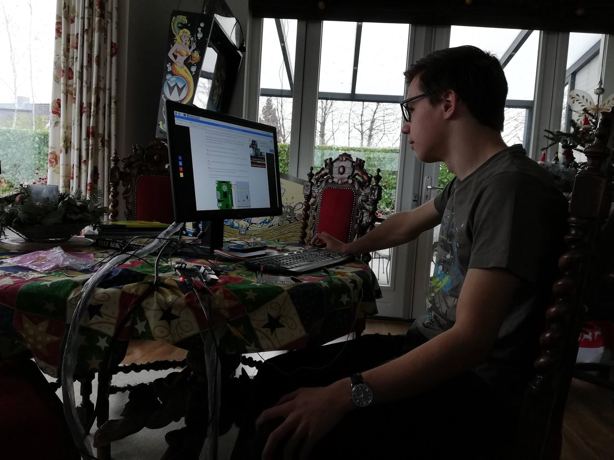
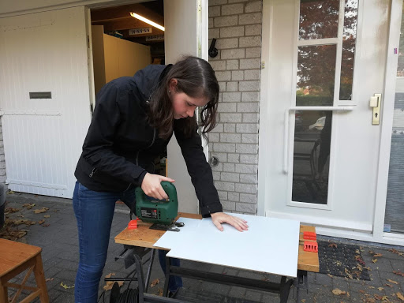

Over ons
Wij zijn Tristan Deenen en Nienke Keuning, twee leerlingen in atheneum 6 op het ds. Pierson college. In het examenjaar krijgt iedereen de kans om een pws te doen over een zelfgekozen onderwerp. Wij hebben besloten om een perpetuum mobile te ontwerpen. Een perpetuum mobile is een apparaat dat altijd door blijft gaan met bewegen zonder toevoeging van energie in het systeem. Met ons profielwerkstuk willen wij onderzoeken hoe magneten het beste kunnen worden benut in een perpetuum mobile.
Er is onderhand een ontwerp bedacht en gebouwd. Hierbij rolt een balletje door een buis en komt deze over een helling weer omhoog. De beweging van het balletje willen we op deze site monitoren. Er zijn sensoren op de baan geplaatst die continu meten wat de snelheid van de bal is op bepaalde punten. Deze meetapparatuur bestaat uit een circuit met LDR sensoren en een Raspberry Pi.